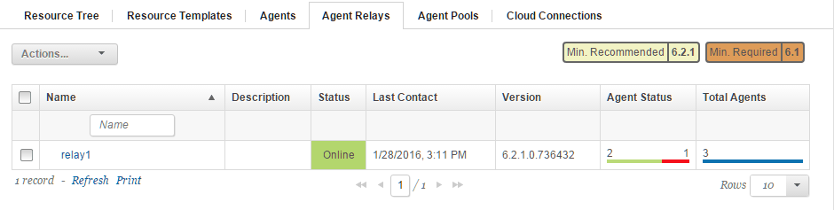

Installing agent relays in interactive mode
Installing an agent relay from the command line involves running a batch file or shell script and specifying information about the agent relay.
-
Ensure that the computer on which you are installing the agent relay has a supported version of the Java™ Runtime Environment (JRE) or Java Development Kit (JDK). For more information, see System Requirements for IBM® UrbanCode™ Deploy.
Important: Beginning in version 6.2.2, the HCL® UrbanCode Deploy server and agent relays require a Java Runtime Environment (JRE) or Java Development Kit (JDK) version 8.
-
If the target computer has an IBM JRE or Java developer kit, update to a supported version of the IBM JRE or Java developer kit.
-
Set the JAVA_HOME system variable to the location of the JRE or JDK that you are using.
- Set the PATH variable to contain the location of the JRE or JDK that you are using.
- Ensure that the firewall on the computer allows connection to the HCL UrbanCode Deploy server through HTTP/HTTPS and through JMS.
- Install the HCL UrbanCode Deploy server.
- Ensure that you have an authentication token for the relay. If you intend to use the component version replication option, the token must be assigned to a user with the server configuration permission
Read Artifact Set List. For information about tokens, see Setting server configuration security. - Set up an account on the computer for the agent relay to use.
- Make sure that your networks and firewalls allow communication on the required ports. See Firewall and communication configuration.
-
Ensure that there is no limit on the maximum memory size and virtual memory size. For example, on most Linux™ systems, you can run the
ulimit -mandulimit -vcommands and ensure that both return the valueunlimited. To find out how to remove the limit on the maximum memory size and virtual memory size, see the documentation for the operating system. -
Download and extract the agent relay installer to the computer on which you want to install the agent relay:
- To download the installer from the server, click Help
 , located in the upper-right corner of the page, and then click Tools. Then, click HCL UrbanCode Deploy Agent Relay and download and extract the file.
, located in the upper-right corner of the page, and then click Tools. Then, click HCL UrbanCode Deploy Agent Relay and download and extract the file. - To find the installer on the server with the command line, go to the following location and copy the file to the target system: installation_folder/opt/tomcat/webapps/ROOT/tools/agent-relay.zip
- To download the installer from the server, click Help
- Expand the compressed installation file.
- From within the expanded agent-relay-install directory, run the install.cmd script (Windows™) or the install.sh file (Linux or UNIX™).
-
The installation program prompts you for the following information. You can accept the default values (displayed within brackets) by pressing Enter. If two options are given, such as
Y/n, the capitalized option is the default value.-
Enter the home directory for the JRE/JDK that the relay should use.
Specify the directory in which Java™ is installed. Press Y to accept the location set in the JAVA_HOME parameter.
-
*Enter the directory to install the agent relay into.*
Enter the directory for the relay. If you enter an existing directory, the program prompts you to upgrade the relay. For information about upgrading, see Upgrading the server. The default value is
/opt/ibm/agentrelayon Linux™ andC:\Program Files\IBM\agentrelayon Windows™. -
The specified directory does not exist. Do you want to create it?
Press Y to create the installation directory.
-
*Enter a unique name for this relay.*
Enter the name of the agent relay. Each relay must have a unique name. The default name is
agent-relay. -
*Enter the IP address or host name that this Agent Relay listens for requests on.*
Enter the IP address or host name on which the relay listens. In most cases, the agent relay listens on all IP addresses that are available to the computer; in this case, specify
0.0.0.0. -
*Enter the port number that this Agent Relay listens for proxy HTTP requests on.*
Enter the port on which the agent relay listens for HTTP requests coming from agents. The default value is 20080.
Note: In addition, the relay automatically listens for CodeStation requests on port
HTTP_proxy + 1on the system where the agent relay is located. If you use the default port for HTTP requests, the relay uses 20081 for CodeStation requests and artifact transfers. If the CodeStation request port is blocked, agents cannot download artifacts. -
*Enter the port number that this Agent Relay uses for JMS communication.*
Enter the port that the agent relay uses for JMS-based communications with remote agents. The default value is 7916.
-
*Do you want to connect the agent relay to one or more central servers?*
Specify whether you want the relay to connect to the HCL® UrbanCode™ Deploy server.
Note: If you do not connect to the server now, you must configure a cluster connection so that the server can initiate communication with this agent relay. See Creating cluster connections.
-
*Enter the hostname or address of the server that this relay will connect to.*
If you indicated that you want to connect the relay to a server, specify the IP or host name where the relay can contact the server. If you specify a host name, make sure that the relay computer can resolve the host name to an IP address via DNS.
-
*Enter the agent JMS communication port number for the server.*
If you indicated that you want to connect the relay to a server, enter the port that the server uses to communicate with agents. The default value is 7918.
-
Do you want to configure an additional connection for failover scenarios?
If you specify a failover connection, you specify one or more additional servers. When the relay starts, it contacts one of the specified servers at random. If that server fails, it switches to another server from the list. For more information, see Configuring agent relays for failover.
-
Enter the hostname or address of the server that this relay will connect to.
Specify the IP or host name of the failover server.
-
Enter the agent JMS communication port number for the server.
Enter the port that the server uses to communicate with agents. The default value is 7918.
-
*Do you want to use mutual authentication between the agent, relay and server?*
If mutual authentication is necessary, enter
Y. See Configuring mutual authentication for information about activating mutual authentication. -
*Enable the agent relay to verify the server HTTPS certificate? If enabled, you must import the server certificate to the JRE keystore on the agent relay.*
Specify whether to verify the server HTTPS certificate.
-
*Do you want to cache files on the relay that are downloaded by connected agents?*
If you want to cache files on the agent relay, enter
Y.Note: If you cache files on the relay, do not put the CodeStation cache on an NFS file system.
-
*What is the storage limit for cached artifact storage?*
If you are caching files on this relay, you can specify a storage limit for those files. You can specify a number of bytes, or use the extensions "
K," "M," "G," or "T" to indicate kilobytes, megabytes, gigabytes, and terabytes. For example, to specify 5 gigabytes, type5G.Note: By default, each hour, the agent relay checks the size of the artifact cache. If the cache is over the limit, the agent relay removes files based on which files have not been used in the longest time. Therefore, the total disk space used by the cache can exceed the cache limit. You must ensure that the agent relay has enough space to store all of the cached artifacts.
-
*Enter each status for which you want to cache components, one status per line, with an empty line to end the list.*
If you choose to cache files on the relay, this option is available. The relay can cache components based on component version status. Enter component statuses, one status per line. A status can contain a space except in the first or last position. A status can contain commas. The special
*status replicates all artifacts, but use this status with caution, because it can make the agent relay store a large amount of data.. To end the list, press Enter on an empty line. If no value is specified, no component versions are replicated.Note: Statuses are stored in the
agentrelay.codestation.geotagsproperty in the relay_install/conf/agentrelay.properties file. In the file, statuses are separated by commas. If you edit a status that contains a comma, the comma must be escaped. For example, a status that is named Hello, world is represented this way:agentrelay.codestation.geotags=Hello%2c World. -
Enter the full web URL for the central server.
Enter the complete URL, that uses the following syntax:
scheme://domain:port. For example:https://myServer.com:8080. -
Provide an authentication token for the associated user account on the central server.
Type or paste the token that is created for the relay. If you chose the component replication option, the user that is associated with the token must have the
Read Artifact Set Listpermission. For information about tokens, see Setting server configuration security.Note: If you did not create a token previously, you can create one now and then continue installation.
-
Which user do you want to run the agent relay?
On Linux systems, specify the operating system user to run the agent relay. The default value is
agentrelay. -
Which group do you want to run the agent relay?
On Linux systems, specify the operating system user for the agent relay. The default value is
agentrelay. -
*Do you want to install the Agent Relay as Windows service?*
If you are installing the relay on Windows™, you can install it as a Windows™ service. The default value is
N.
-
-
If the relay is on Linux or UNIX and will connect to 400 or more agents, increase the process and file limit for the server:
-
Add the following lines to the file that sets process and file limits. For example, for Red Hat Enterprise Linux, version 7, use the /etc/security/limits.conf file. For AIX, use the /etc/security/limits.d/90-nproc.conf file.
relayUser soft nofile 60000 relayUser hard nofile 60000 relayUser soft nproc 65535 relayUser hard nproc 65535Use the name of the operating system user that is running the agent relay for
relayUser. By default, the agent relay installation program creates a user that is namedagentrelay. -
Restart the computer that hosts the agent relay.
- To start the agent relay, go to the installation folder for the relay and run the following command:
bin/agentrelay start -
If you must modify the relay, you can edit these properties in the agentrelay.properties file in the relay_installation\conf directory.
Now you can install agents and connect them to the relay. See Installing agents.
To monitor the status of the relay and the agents that are connected to it, click Resources > Agent Relays. This tab shows the number of active and offline agents that are connected to each relay, as shown in the following figure:

For more information about an agent relay, in the Name column, click the relay.
Parent topic: Installing agent relays